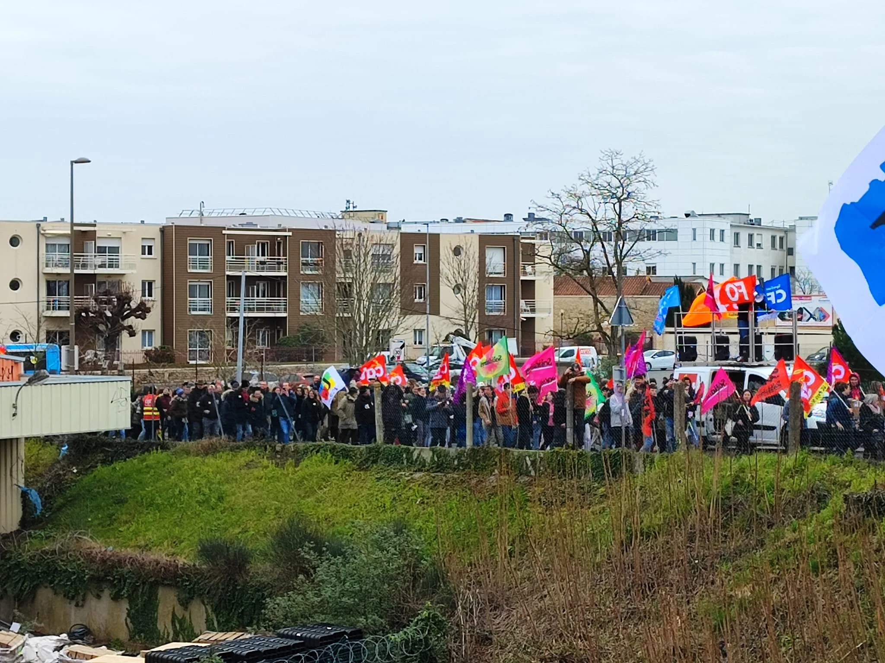
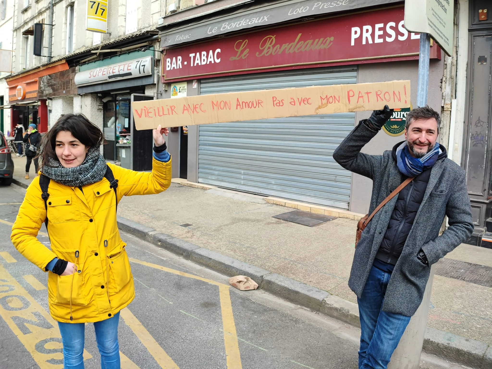

Compte rendu fédéral
À Niort, une manifestation massive le 7 mars contre la réforme des retraites
Date indiquée par Facebook · 8 mars 2023
Repères éditoriaux
Nous avons manifesté à Niort pour obtenir le retrait de la réforme. La fédération estimait ce jour-là la participation à près de 15 000 personnes.
Texte conservé avec la publication
Retraites : Le 7 mars à Niort, près de 15000 personnes pour manifester le refus de cette réforme inutile, injuste et fondamentalement régressive.
Une très large majorité de français y est opposée.Le gouvernement a perdu la bataille des retraites, il doit retirer sa réforme.


Sources
Archive rouge · export Facebook · AR-0002-FB-01738
À lire aussi · Bressuire. La manifestation du 7 mars contre la réforme des retraites en vidéo